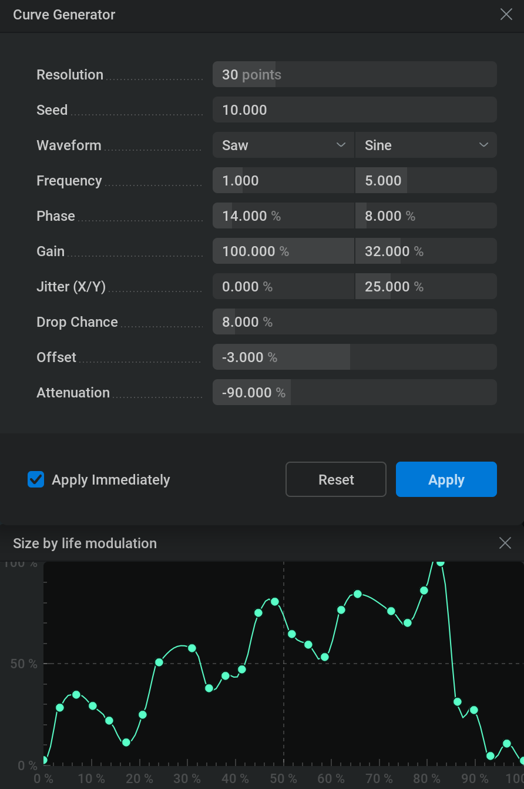

Modulation Curve#
Modulation curves are used to map values based on two axis.
Curve Editing#
For more precise editing you can click the
 icon next to the curve to open a bigger Remapping curve window. This window can be scaled by
icon next to the curve to open a bigger Remapping curve window. This window can be scaled by  clicking and dragging the corners and the window can be closed by clicking the
clicking and dragging the corners and the window can be closed by clicking the  icon in the top right corner or the
icon in the top right corner or the  icon next to the curve in the properties panel.
icon next to the curve in the properties panel.Double
click anywhere on the graph to insert another curve point.- click and drag on a curve point to move it.
Select a curve point by
clicking on it.Box-select curve points by
clicking and dragging.Add or subtract from your curve point selection by using Ctrl +
clicking.Select all curve points by pressing Ctrl + A
Delete selected curve points by using the Delete key. Or use the right-click menu of the point and select Delete.
Use the
 button or the right-click menu on the graph to select Flip Horizontally to flip all the curve points horizontally in the graph.
button or the right-click menu on the graph to select Flip Horizontally to flip all the curve points horizontally in the graph.Use the button or the right-click menu on the graph to select Flip Vertically to flip all the curve points vertically in the graph.
{kind=link}
The Interpolation Mode defines the method of interpolating the values from one curve point to another.
You can change the Interpolation Mode of the curve points in the right-click menu.
- There are a few options:
Bézier will interpolate the values based on the bézier handles. When using this mode you can see the bézier handles when selecting a single curve point. You can change the interpolation by LMB and dragging the dots at the end of the bézier handles. A flat part of the curve means the values change slowly and a steep part of the curve means the values change quickly.
Smooth will generate a smooth line from one curve point to another. This avoids having hard transitions.
Linear Values move linearly from one curve point to another. This is useful for getting very predictable results, but can result in robotic looking transitions.
Constant Values stay constant until the next curve point is reached. This results in jumping values.
- When using the Bézier mode, there are a few handle types you can use also found in the right-click menu.
Aligned The handles can be moved freely and can have any direction and length. For this type, one handle is always in the inverted direction and has the same length as the other one.
Free The handles can be moved in any way separate from each other.
Auto Clamped This is the default behavior. For this type, the handles can never go beyond the previous or next curve point. Note that when changing the handles the type will be set to Aligned.
Auto Vectored This will point the left handle towards the previous curve point and the right handle towards the next curve point. Note that when changing the handles the type will be set to Free.
You can always reset the bezier handles to default for the selected curve points by clicking on Reset Handle in the right-click menu.
Curve Presets#
When clicking one of the curve preset buttons below the graph the curve will be overwritten to that setup.
You can still freely edit the curve after selecting a preset.
These presets are useful because they can quickly set up common curves for you or give you a useful starting point.
Set the graph to a two-point curve with both points at the maximum value.
Set the graph to a two-point curve with both points at the minimum value.
Set the graph to a two-point curve with the first point at the minimum value and the second point at the maximum value.
Set the graph to a two-point curve with the first point at the maximum value and the second point at the minimum value.
Set the graph to a three-point curve with the first point at the minimum value, the second at the maximum value, and the third at the minimum value.
Set the graph to a three-point curve with the first point at the maximum value, the second at the minimum value, and the third at the maximum value.
These are the same as the last four but using a Bézier interpolation with the Free handle type instead of the Linear interpolation giving smoother transitions from point to point.
{kind=link}
{kind=link}
{kind=link}
{kind=link}
{kind=link}
{kind=link}
{kind=link}
{kind=link}
{kind=link}
{kind=link}
Saving and Loading Curves#
Any modulation curve can be saved to your hard drive for later use!
When you use a specific custom curve often, you can save it and load it into any project.
Loaded curves can still be edited in the modulation curve editor so you can also use them as a starting point or custom preset.
Save or load a modulation curve by
 clicking in the graph and selecting Save… or Load…
clicking in the graph and selecting Save… or Load…A file browser will pop up where you can navigate to the folder you want to save your curve to or load your curve from.
To save a curve, provide a filename and use the Save button in the file browser.
The .jfxcurve extension will be added automatically and your custom curve file will be saved to your hard drive.
To load a curve, select a file with the .jfxcurve extension in the file browser and use the Open button.
If you decide not to load or save a curve use the Cancel button in the file browser.
Curve Generator#
Another way to create modulation curves is to make them procedually using the Curve Generator.
To open the Curve Generator  click within the graph and select Curve Generator… from the context menu.
click within the graph and select Curve Generator… from the context menu.
With the Curve Generator window opened the curve is now controlled by the generator indicated with the visual glow over the graph.
Let’s look at the options for controlling our curve:
{kind=link}

Resolution: Specifies the amount of points used to build the curve. More points can create more detailed curves, less points can make the curve easier to edit afterwards.
Seed: Different numbers give different random changes when using the Jitter (X/Y) parameter and will drop different curve points when using the Drop Chance parameter.
Note that the next four parameters are split into two columns both controlling a different waveform! The right column doesn’t affect the curve by default as the Gain parameter for that waveform is set to 0%!
- Waveform: Type of function to determine the curve shape.
Sine: Sinewave, smooth oscillation up and down.
Saw: Oscillation over a modulo curve, the value will abruptly reset to the same value every cycle.
Pulse: Abruptly switches from a top value to a bottom value back and forth.
Frequency: Amount of waveform cycles within the 0% to 100% range.
Phase: Phase of the funtion. You can use this to move your waveform horizontaly.
Gain: Waveform intensity. At 100% the waveform will oscillate from 0% to 100% using the whole graph, at 0% the waveform will oscillate from 50% to 50% turning in to a straight line (these values can be offset by using the Offset parameter). Using the Gain parameter is like scaling your waveform in the vertical axis. This parameter is also used to mix the two different waveforms together.
Jitter (X/Y): Varies the position of the curve points. Note that this isn’t related to the waveform and affects all curvepoints. The left slider will randomly move the curve points horizontally over the graph, and the right slider will move the curve points vertically over the graph. Higher percentages result in the curve points moving further from their original positions, 100% will randomly move the curve points within a range of 0 to 100%. This parameter is useful to add some organic variation to the mathematically smooth shapes of the waveforms. To get a different randomization of the positions you can use a different value in the Seed parameter.
Drop Chance: The chance in percentage of the curve points being removed from the curve. This is useful to distribute the detail more randomly over the curve creating a more organic-looking curve. 0% means no curve points will be dropped 100% means all curve points will be dropped basically removing the curve. Different curve points will be dropped when using different values in the Seed parameter.
Offset: Offsets the vertical position of the whole curve. This can be used to move the modulation curve vertically. Curve point positions will be clipped within the 0% to 100% range.
Attenuation: Intensity of the modulation curve. This can be used to scale the whole curve vertically. For example, -100% will flip the curve vertically.
Apply Immediately: If this checkbox is checked, all changes made in the Curve Generator are immediately applied to the modulation curve so you can see the results in the viewport. If not checked, you can see the curve you’re creating in the graph but its effects won’t immediately be applied to your project whenever you change a parameter in the Curve Generator and if you click the
in the top right corner of the Curve Generator you would still have the modulation curve you started with before opening the Curve Generator window.Reset: Sets all parameters in the Curve Generator to their default values creating a basic sinewave curve.
Apply: Applies the generated curve to the modulation curve in your project and closes the Curve Generator window.